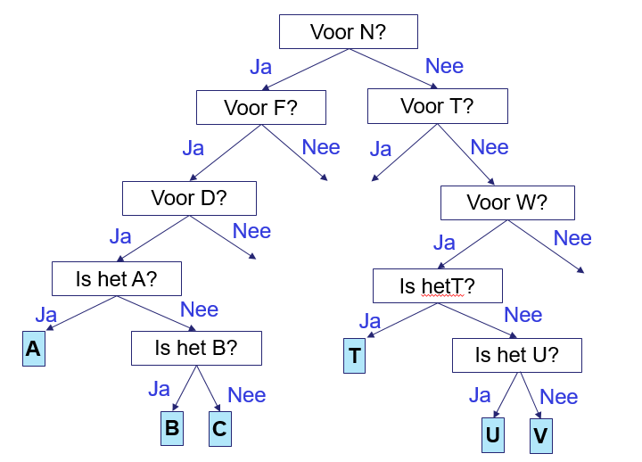
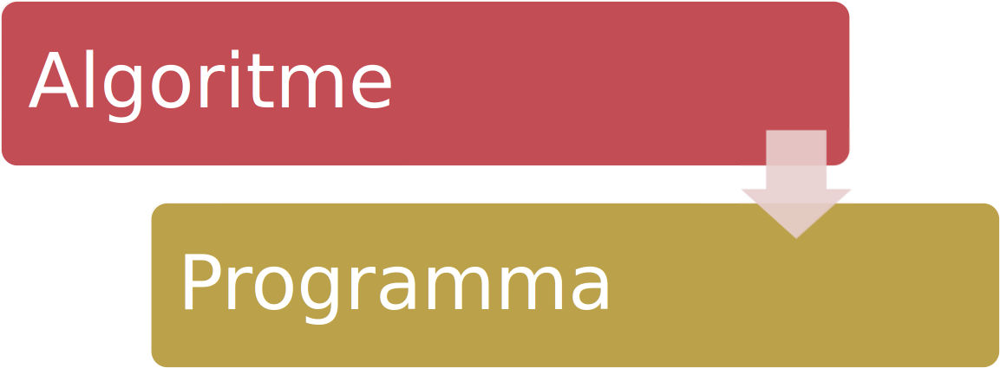

Q-highschool / Bijeenkomst 3
if/elseWe vormen een binnen- en buitencirkel.
Letter voor letter?
A: 1x knipperen, B: 2x knipperen, C: 3x knipperen, ...
Problemen?
In tweetallen:
Welk algoritme is sneller? Meet het aantal vragen en aantal keer knipperen!
Bijvoorbeeld voor een 4-letter-woord:
Knipper één keer voor "ja", knipper twee keer voor "nee".
Voorbeeld: de letter B.


Wat is het doel van een return-statement in een functie?
Wat is het verschil tussen een enkele regel commentaar en een meerregelige commentaar in Python?
//, en een meerregelige commentaar met /* */.#, en een meerregelige commentaar met """ of '''.#, en een meerregelige commentaar met //.#.Wat is het resultaat van de volgende code?
print(type(3 + 4.5))
<class 'int'><class 'float'><class 'str'><class 'complex'>Wat is het verschil tussen een int en een float in Python?
int is een geheel getal, terwijl een float een decimaal getal is.int is een tekst, terwijl een float een getal is.int is een negatief getal, terwijl een float een positief getal is.Wat is het resultaat van de volgende code?
print("5" + "3")
print(5 + 3)
if/else-statements=
==
True (waar) ofFalse (niet waar)
https://informatica.q-highschool.nl/basis_programmeren/2526-1/3_input_if.html
Online bijeenkomst
16.00u tot 17.30u